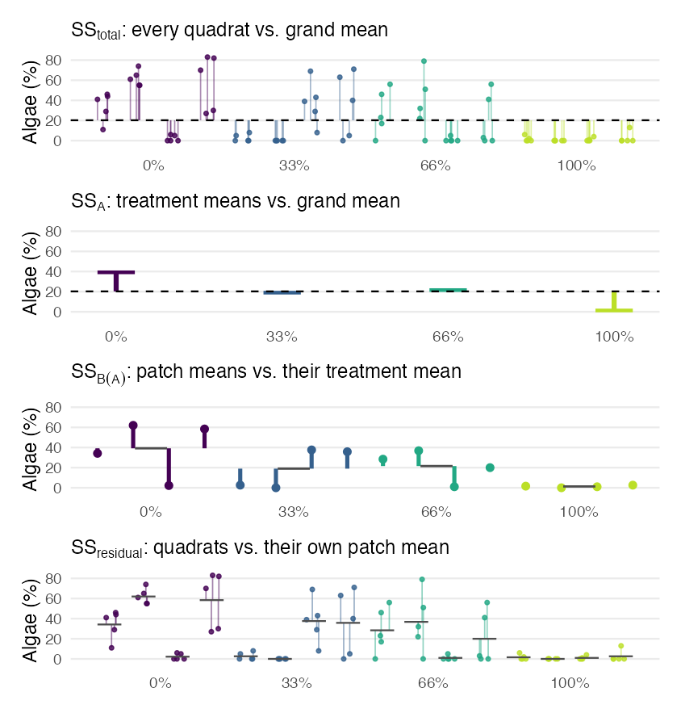
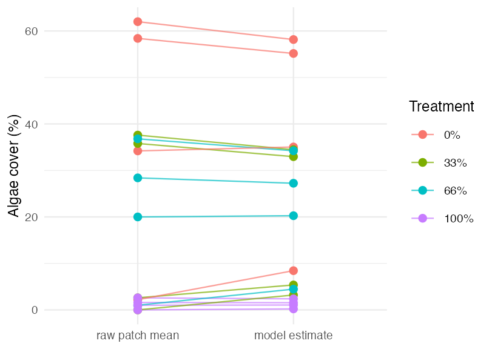
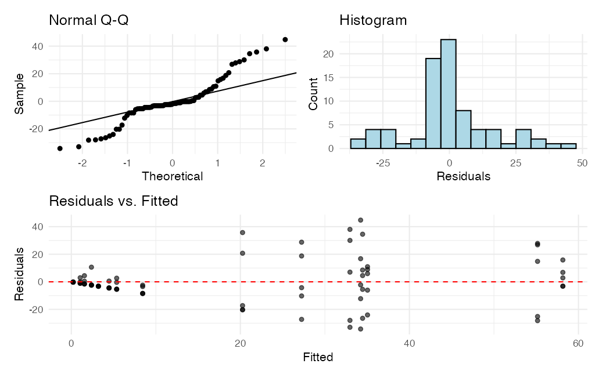
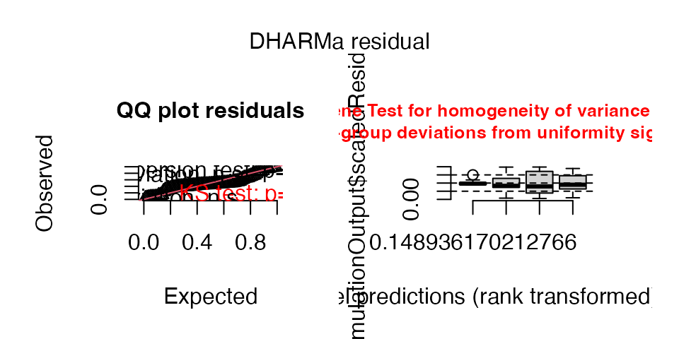
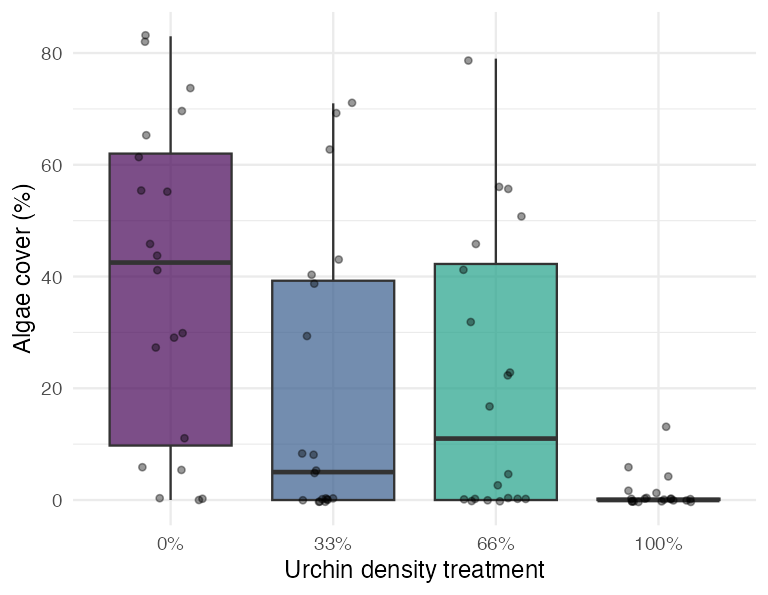

## # A tibble: 4 × 4
## treat patch quad algae
## <fct> <fct> <dbl> <dbl>
## 1 100% 1 1 0
## 2 100% 1 2 0
## 3 100% 1 3 0
## 4 100% 1 4 6Lecture: Linear Mixed Models
Random effects for nested and hierarchical data
ANOVA
Mixed Models
The modern mixed-model (lmer) alternative to a traditional nested ANOVA: how REML estimates variance components instead of partitioning sums of squares, F vs. Chi-square denominator df, the ICC and partial pooling, diagnostics and post-hoc comparisons — on the sea urchin grazing / algae cover dataset.
Where We Left Off
Covered last time — generalized linear models:
- The three elements of a GLM — distribution, predictors, link
- Poisson and negative binomial for counts; overdispersion
- Logistic regression and the odds ratio
And from the ANOVA weeks — factorial designs:
- Two crossed factors, main effects and an interaction
- Type I / II / III sums of squares on unbalanced data
- Estimated marginal means, and simple effects
Today the second factor is not crossed with the first, and we do not care about its levels at all.
Note
✅ Where today fits
Last week changed the distribution of the response. This week changes the error structure — which observations are allowed to be independent. Put both together and you get glmer().
Tip
🖐 Part 1 is self-contained
Part 1 builds the hierarchical design, and the traditional aov(..., Error()) analysis of it, from scratch — so that Parts 2–7 have something to improve on. No earlier lecture required.
Part 1 · The Data, and Why a One-Way ANOVA Fails It
Data Overview
treat — urchin density treatment (0 / 33 / 66 / 100%) patch — four patches nested inside each treatment, 16 in all quad — 5 replicate quadrats within every patch algae — % cover of filamentous algae, the response
## # A tibble: 4 × 4
## treat n mean sd
## <fct> <dbl> <dbl> <dbl>
## 1 0% 20 39.2 28.7
## 2 33% 20 19 25.7
## 3 66% 20 21.6 25.1
## 4 100% 20 1.3 3.18
Note
📖 The gradient is not monotonic
39.2 → 19.0 → 21.6 → 1.3. The 33% and 66% means sit within noise of each other. That is the data, not an error — and it is part of why the treatment effect comes out non-significant.
The Design Is Hierarchical, Not Factorial
treat and patch are not crossed. Patch 7 exists only inside one treatment; there is no “patch 7 of the 0% treatment and of the 100% treatment.”
That is a nested, or hierarchical, design:
\[\text{treatment} \rightarrow \text{patch} \rightarrow \text{quadrat}\]
The 5 quadrats in a patch are subsamples of that patch, not 5 independent replicates of the treatment. The treatment was applied to the patch.
Important
⚠️ So what is n?
For testing treat there are 16 experimental units, not 80. Four patches per treatment.
Treating the 80 quadrats as independent replicates of the treatment is pseudoreplication (Hurlbert 1984) — the single most common fatal flaw in ecological statistics.
Tip
🖐 The giveaway question
“What did I apply the treatment to?” Count those. If you measured more things than you manipulated, the extra measurements are subsamples.
Pseudoreplication, Priced
Same 80 numbers, two models. The only difference is what the treatment is tested against:
a_ps <- summary(aov(algae ~ treat + treat:patch,
data = u_df))[[1]]
round(a_ps[, c("Df", "Sum Sq", "Mean Sq")], 1)
## Df Sum Sq Mean Sq
## treat 3 14429 4809.7
## treat:patch 12 21242 1770.2
## Residuals 64 19110 298.6
c(naive_F = a_ps[1, "Mean Sq"] / a_ps[3, "Mean Sq"],
nested_F = a_ps[1, "Mean Sq"] / a_ps[2, "Mean Sq"]
) %>% round(2)
## naive_F nested_F
## 16.11 2.72
Important
16.11 against 2.72
Both divide \(MS_{treat}\) = 4810. The naive model divides by \(MS_{resid}\) = 298.6, the quadrat-to-quadrat noise. The correct one divides by \(MS_{patch(treat)}\) = 1770.2, the patch-to-patch noise.
p goes from 0.00000007 to 0.091 — from a headline result to nothing — on exactly the same data.
The traditional fix is to name the error stratum by hand:
aov(algae ~ treat + Error(patch), data = u_df)That is what the rest of this lecture replaces.
Where the Variation Goes
One quadrat’s distance from the grand mean splits into three pieces, not two:
\[\underbrace{(Y_{ijk} - \bar{Y})}_{\text{total}} = \underbrace{(\bar{Y}_i - \bar{Y})}_{A} + \underbrace{(\bar{Y}_{ij} - \bar{Y}_i)}_{B(A)} + \underbrace{(Y_{ijk} - \bar{Y}_{ij})}_{\text{resid}}\]
Square and sum over all 80 quadrats:
\[SS_{total} = SS_A + SS_{B(A)} + SS_{resid}\]
On these data: 54 781 = 14 429 + 21 242 + 19 110.
Note
The middle row is the whole point
A one-way ANOVA has no \(SS_{B(A)}\) row — that variation lands in the residual. Here it is bigger than the treatment effect, and it is what the treatment must be tested against.

Pseudoreplication Corrupts the p-Value, Not the Effect Size
## model partial_eta2 p
## 1 Nested (correct) 0.40 0.091
## 2 Naive (pseudoreplicated) 0.43 0.00000007The wrong model and the right model agree the treatment effect is large — 0.40 against 0.43.
Important
What they disagree about is confidence
Seven orders of magnitude in p, and almost nothing in effect size. Pseudoreplication does not invent an effect. It invents certainty.
Note
📖 So what is the honest conclusion?
Not “urchins do not affect algae.” It is “a large effect that four patches per treatment could not resolve” — a power problem, and the effect size is what lets you say so.
Hold onto that. In Part 5 the variance components will tell you exactly why four patches were not enough, and what to do about it.
Part 2 · Fixed, Random, and the Mixed Model
What Makes an Effect “Random”?
Ask one question: do I care about these specific levels, or are they a sample of levels I could have had?
treat |
patch |
|
|---|---|---|
| The levels are | 0/33/66/100% density | patches 1–16 |
| Chosen by | me, deliberately | whatever was there |
| Would a repeat study use the same ones? | yes | no — different patches |
| I want to estimate | each level’s mean | how much they vary |
| So it is | fixed | random |
Important
The key consequence
A fixed factor with 16 levels costs you 15 parameters. A random factor with 16 levels costs you one — a single variance, σ²patch.
That is why mixed models cope with designs aov() chokes on: they are estimating far less.
Note
📖 A useful test
If you can write a sentence a reader would care about that names a specific level — “the 100% density treatment reduced algae” — it is fixed.
If the sentence would be “patch 7 happened to be lush” — nobody cares about patch 7 in particular. Random.
Warning
⚠️ You need enough levels
Estimating a variance from fewer than ~5 levels is unreliable. With 2 or 3 groups, fit them as fixed effects instead.
We have 16 patches — comfortably enough.
Reading the Random-Effects Formula
Read every random term as
\[(\ \text{what varies}\ \mid\ \text{across what}\ )\]
(1|patch)— the1means the intercept. Each patch gets its own baseline algae cover.(1|treat:patch)— the same thing, just naming the group as the treatment-patch combination. Still intercept-only.(1 + depth|patch)— this is a random slope: each patch gets its own intercept and its own slope fordepth. (There is nodepthin this dataset — it is what one would look like.)
Warning
⚠️ (1|treat:patch) is not a random slope
Anything of the form (1|...) is random intercepts only — the 1 is the intercept. What changes between (1|patch) and (1|treat:patch) is the grouping variable, not what varies within it.
Here they are the identical model, because patch IDs are already unique (1–16) and each patch sits in one treatment. We will use (1|patch).
Tip
🖐 The rule
You only have a random slope when something other than 1 appears on the left of the |.
Fitting It
u_lmer_model <- lmer(
algae ~ treat + (1 | patch),
data = u_df,
control = lmerControl(calc.derivs = FALSE))
VarCorr(u_lmer_model)
## Groups Name Std.Dev.
## patch (Intercept) 17.156
## Residual 17.280
fixef(u_lmer_model)
## (Intercept) treat1 treat2 treat3
## 20.2625 18.9375 -1.2625 1.2875The model in words:
\[algae_{ijk} = \mu + \alpha_i + b_{j(i)} + \epsilon_{ijk}\]
- \(\mu\) — the overall mean
- \(\alpha_i\) — the fixed effect of treatment i
- \(b_{j(i)}\) — the random effect of patch j in treatment i, \(b \sim N(0,\ \sigma^2_{patch})\)
- \(\epsilon_{ijk}\) — the residual for quadrat k, \(\epsilon \sim N(0,\ \sigma^2_{within})\)
Important
Notice what the model estimates for patch: not 16 numbers, one number — the variance those 16 patches were drawn from.
Part 3 · Testing the Fixed Effect
Two Tests, Two Answers
Anova(u_lmer_model, type = 3,
test.statistic = "F")
## Analysis of Deviance Table (Type III Wald F tests with Kenward-Roger df)
##
## Response: algae
## F Df Df.res Pr(>F)
## (Intercept) 18.5551 1 12 0.001018 **
## treat 2.7171 3 12 0.091262 .
## ---
## Signif. codes: 0 '***' 0.001 '**' 0.01 '*' 0.05 '.' 0.1 ' ' 1Anova(u_lmer_model, type = 3,
test.statistic = "Chisq")
## Analysis of Deviance Table (Type III Wald chisquare tests)
##
## Response: algae
## Chisq Df Pr(>Chisq)
## (Intercept) 18.5551 1 0.00001651 ***
## treat 8.1513 3 0.04299 *
## ---
## Signif. codes: 0 '***' 0.001 '**' 0.01 '*' 0.05 '.' 0.1 ' ' 1The F-test (Kenward-Roger denominator df)
- Accounts for the uncertainty in the estimated variance components
- More conservative, better at small n
- Here: F3,12 = 2.72, p = 0.091
The Wald χ²
- Assumes the variance components are known, not estimated
- Assumes infinite denominator df, i.e. a large sample
- Here: χ²3 = 8.15, p = 0.043
χ² = F × numerator df = 2.717 × 3 = 8.15 — exactly. The only thing that differs is the reference distribution: χ²3 assumes infinite denominator df; F3,12 admits there are 12.
Same Model, Same Data, Opposite Conclusions
| Test | Statistic | p | Verdict at α = 0.05 |
|---|---|---|---|
| F, Kenward-Roger df | F3,12 = 2.72 | 0.091 | not significant |
| F, Satterthwaite df | F3,12 = 2.72 | 0.091 | not significant |
| Wald χ² | χ²3 = 8.15 | 0.043 | significant |
Rule of thumb: default to the F-test. As the number of groups grows its denominator df grow with them, and it converges on the χ² — so you give up nothing by always using it, and you are protected when the sample is small. The χ² is a large-sample shortcut, not a better test.
We have 80 observations and 16 patches — nowhere near large sample.
Important
⚠️ Report the F-test — and say which df you used
The χ² is being over-confident. It pretends it knows σ²patch and σ²within exactly, when they were estimated from 16 patches.
The F-test agrees with Part 1’s aov(Error(patch)) to four decimal places, because it is the same test.
Warning
🖐 The uncomfortable part
Run only the χ² and you report a significant effect and never know. When two defensible analyses straddle α = 0.05, say so and justify the choice — do not pick one and delete the other.
Part 4 · How the Variance Actually Gets Estimated
The Question This Part Answers
For three weeks, every answer came from one move: take the total sum of squares, cut it into pieces by source, divide each piece by its df to get a mean square, and form a ratio.
\[SS_{total} = SS_{treat} + SS_{patch(treat)} + SS_{within}\]
lmer() printed σ²patch = 294.3 and never showed you a sum of squares anywhere.
Important
So where did that number come from, and why is it not an SS table?
The rest of this part is the answer. It is the single biggest conceptual change between Part 1 and the rest of today — bigger than the notation, bigger than the p-value.
The Old Route — Sums of Squares and Expected Mean Squares
Part 1’s table, one more time:
a_tab <- summary(aov(algae ~ treat + treat:patch,
data = u_df))[[1]]
round(a_tab[, c("Df", "Sum Sq", "Mean Sq")], 1)
## Df Sum Sq Mean Sq
## treat 3 14429 4809.7
## treat:patch 12 21242 1770.2
## Residuals 64 19110 298.6Statistical theory tells you what each mean square estimates on average — its expected mean square:
\[E[MS_{within}] = \sigma^2_{within}\] \[E[MS_{patch}] = \sigma^2_{within} + n\,\sigma^2_{patch}\]
Now set the observed equal to the expected and solve. That is all the old method is — two equations, two unknowns, no statistics at all past this point:
\[\hat\sigma^2_{within} = MS_{within}\] \[\hat\sigma^2_{patch} = \frac{MS_{patch} - MS_{within}}{n}\]
MS_patch <- a_tab[2, "Mean Sq"]
MS_within <- a_tab[3, "Mean Sq"]
n <- 5 # quadrats per patch
c(within = MS_within,
patch = (MS_patch - MS_within) / n)
## within patch
## 298.6000 294.3125This is the method of moments. It is arithmetic on a table.
The New Route — Write Down the Variance and Search for It
A mixed model never builds that table. It writes the variance of the whole response vector in one matrix:
\[\mathbf{V} = \sigma^2_{patch}\,\mathbf{ZZ}^\top + \sigma^2_{within}\,\mathbf{I}\]
- \(\mathbf{Z}\) says which patch each quadrat belongs to
- \(\mathbf{ZZ}^\top\) is 1 for any two quadrats in the same patch, 0 otherwise
- So \(\mathbf{V}\) states, directly, that two quadrats in a patch are correlated and two in different patches are not
Then it asks a completely different question:
Which pair of numbers (σ²patch, σ²within) makes the data I actually observed most likely?
Important
That is the whole switch.
Old: partition a quantity you computed (SS), then solve an algebraic identity for the variances.
New: propose a pair of variances, ask how probable the data are under them, and keep searching until that probability stops improving.
No decomposition. No table. A search over a likelihood surface.
The F-ratio idea does not disappear — it comes back at the end, when you test the fixed effect. But it is no longer how the variances are obtained.
The Restricted Likelihood, Written Out
Eight lines, no lme4. This is literally what the optimizer is doing:
y <- u_df$algae
X <- model.matrix(~ treat, u_df) # fixed effects
Z <- model.matrix(~ 0 + patch, u_df) # grouping
ZZt <- Z %*% t(Z)
reml_ll <- function(v_patch, v_within) {
V <- v_patch * ZZt + v_within * diag(nrow(X))
Vi <- solve(V)
A <- t(X) %*% Vi %*% X
b <- solve(A, t(X) %*% Vi %*% y) # GLS fixed effects
r <- y - X %*% b
-0.5 * as.numeric(determinant(V, log = TRUE)$modulus +
determinant(A, log = TRUE)$modulus +
t(r) %*% Vi %*% r)
}Three pieces, each doing one job:
- \(\log|\mathbf{V}|\) — penalises making the variances big, since a bigger variance spreads probability thinner
- \(\mathbf{r}^\top\mathbf{V}^{-1}\mathbf{r}\) — penalises leaving big residuals, which pushes the variances up
- \(\log|\mathbf{X}^\top\mathbf{V}^{-1}\mathbf{X}|\) — the restricted part, the correction for having estimated the fixed effects
The answer is the pair where those forces balance.
(An additive constant, \(-\tfrac12 (n-p)\log 2\pi\), is left out — it shifts the curve but not where the maximum is.)
The Surface the Optimizer Climbs

Slice the surface at σ²within = 298.6 and you can see the whole method: the optimizer walks uphill until the slope is flat.
Warning
⚠️ Look how flat that peak is
Everything from roughly 150 to 600 sits within about one log-likelihood unit of the peak. Variance components are badly determined with only 16 groups — and that uncertainty is exactly what the Kenward-Roger F-test accounts for and the Wald χ² ignores.
This plot is the reason those two tests disagreed.
Both Routes, One Number
# route 1: moments, from the SS table
moments <- (MS_patch - MS_within) / n
# route 2: maximise the restricted likelihood
fit <- optim(c(200, 300),
\(p) -reml_ll(p[1], p[2]),
method = "L-BFGS-B",
lower = c(0, 1e-6))
# route 3: what lmer() reports
lmer_vc <- as.data.frame(
VarCorr(u_lmer_model))$vcov[1]
round(c(moments = moments,
likelihood = fit$par[1],
lmer = lmer_vc), 3)
## moments likelihood lmer
## 294.313 294.312 294.313
Important
294.31, three ways.
They agree to within 0.001 — and the first two have nothing in common methodologically. One is algebra on a table of sums of squares; the other is a numerical search over a likelihood surface.
On a balanced design the restricted maximum-likelihood solution has a closed form, and that closed form is the moment estimator — as long as it comes out positive.
So the traditional route was never wrong. It was a special case that happens to have a shortcut — and you have been using the shortcut without being told it was one.
Next slide: what happens when the shortcut stops existing.
Where the Two Routes Part Company
1. The moment estimator can return a negative variance.
\(MS_{patch} < MS_{within}\) is perfectly possible by chance, and then \((MS_{patch}-MS_{within})/n\) is below zero — an impossible value for a variance.
## moments REML
## -1.634 0.000REML cannot go below zero — the likelihood is only defined for non-negative variances — so it stops at the boundary and warns “boundary (singular) fit”.
2. Unbalanced data has no single n to divide by.
Thin four patches to one quadrat each, as a storm would:
## moments, n = 5 moments, n0 = 3.95 REML
## 198.2 250.9 256.7
Important
Three answers, and the moment estimator needs you to choose an effective n before it will give one at all. REML never asks — the likelihood already knows how many quadrats each patch has.
This is why mixed models replaced Error().
Why REML and Not Plain ML
ml_fit <- lmer(algae ~ treat + (1 | patch),
data = u_df, REML = FALSE,
control = lmerControl(calc.derivs = FALSE))
round(c(
REML = as.data.frame(VarCorr(u_lmer_model))$vcov[1],
ML = as.data.frame(VarCorr(ml_fit))$vcov[1]), 1)
## REML ML
## 294.3 205.8Plain maximum likelihood estimates σ²patch as 205.8. REML gets 294.3. ML is biased 30% low.
You have met this bias before, in week 2.
\[s^2 = \frac{\sum(y-\bar y)^2}{n-\mathbf{1}} \quad\text{not}\quad \frac{\sum(y-\bar y)^2}{n}\]
Dividing by n under-estimates the variance because you spent one df estimating \(\bar y\). ML makes exactly that mistake, at scale: it estimates the four treatment means and then behaves as though they were known all along.
Important
REML = “restricted”: it maximises the likelihood of the data after the fixed effects have been projected out — the \(\log|\mathbf{X}^\top\mathbf{V}^{-1}\mathbf{X}|\) term three slides back. That term is the \(n-1\) correction, generalised.
Use REML for variance components. Switch to ML only to compare models with different fixed effects.
Part 4 — The Short Version
| Nested ANOVA (Part 1) | Mixed model (Parts 2–7) | |
|---|---|---|
| Starts from | the total sum of squares | the variance matrix \(\mathbf{V}\) |
| Core move | partition SS by source | search for the most likely variances |
| Variance components from | solving \(E[MS]\) equations | maximising the restricted likelihood |
| Needs balance? | yes, for exact tests | no |
| Negative variance | can happen, is meaningless | impossible — stops at 0 |
| Unbalanced n | you must pick an effective n | handled automatically |
| On this dataset | σ²patch = 294.31 | σ²patch = 294.31 |
Note
✅ The one sentence
Sums of squares divide up variation that has already been computed; likelihood proposes variances and asks how well they explain the data. On a balanced design the two land on the same number — everywhere else, only the second one still works.
Part 5 · What the Random Effect Buys You
The Intraclass Correlation
vc <- as.data.frame(VarCorr(u_lmer_model))
v_patch <- vc$vcov[vc$grp != "Residual"]
v_resid <- vc$vcov[vc$grp == "Residual"]
round(c(among_patches = v_patch,
within_patches = v_resid,
ICC = v_patch / (v_patch + v_resid)), 3)
## among_patches within_patches ICC
## 294.313 298.600 0.496The ICC is the share of variance living between groups — equivalently, how strongly two quadrats in the same patch resemble each other.
Important
ICC = 0.50 is the whole reason we are here
Two quadrats from the same patch are half-correlated. They are not two independent observations.
An ICC near 0 would mean patches barely matter and ordinary ANOVA would have been fine. An ICC of 0.50 means ignoring patch would have been badly wrong — and Part 1’s naive model showed exactly how wrong (F = 16.11 instead of 2.72).
Tip
🖐 Use it to design the next study
With ICC = 0.50, a sixth quadrat in an existing patch buys you almost nothing. A new patch buys you a lot. The p-value could never have told you that.
Partial Pooling — What Happens to Each Patch
A random effect does not just adjust the p-value. It changes each patch’s estimate.

Note
📖 New word: shrinkage
Every patch estimate is pulled toward its treatment mean. The model treats an extreme patch average as partly real signal and partly luck, and splits the difference.
Patches with fewer quadrats, or more internal scatter, get pulled further.
Tip
🖐 Why this is a feature
A patch whose 5 quadrats happened to land high is probably not that extreme — the next 5 would come back closer to average.
This is partial pooling: between treating every patch as unrelated and pretending they are all identical.
Reporting the Variance Components
Note
How to report this result
“Algal cover did not differ significantly among urchin density treatments (linear mixed model with patch as a random effect, F3,12 = 2.72, p = 0.091, Kenward-Roger denominator df). Among-patch variance was substantial (σ²patch = 294.3 vs σ²within = 298.6, ICC = 0.50), indicating strong spatial heterogeneity in algal cover.”
Both halves belong in the sentence. The fixed effect answers did the treatment do anything; the variance component answers how noisy is this reef, which is what the next person planning a study needs.
Important
⚠️ “Not significant” is not “no effect”
With σ²patch ≈ σ²within, patch-to-patch variation is as large as quadrat-to-quadrat variation. Four patches per treatment simply cannot resolve a treatment effect against that much background noise.
The honest conclusion is “this design could not detect it”, not “urchins do not affect algae.”
Tip
🖐 Where 294.3 came from
By hand from the mean squares, from a restricted likelihood maximised with optim(), and from VarCorr() — three routes, one number. See Part 4.
Part 6 · Post-Hoc, Assumptions, and Reporting
Estimated Marginal Means
u_emm <- emmeans(u_lmer_model, ~ treat)
u_emm
## treat emmean SE df lower.CL upper.CL
## 0% 39.2 9.41 12 18.70 59.7
## 33% 19.0 9.41 12 -1.50 39.5
## 66% 21.6 9.41 12 1.05 42.0
## 100% 1.3 9.41 12 -19.20 21.8
##
## Degrees-of-freedom method: kenward-roger
## Confidence level used: 0.95Every standard error is 9.41 — identical across treatments, because the design is balanced and the SE comes from the patch stratum (4 patches per treatment), not from the 20 quadrats.
Warning
⚠️ Two of these intervals go below zero
Algae cover is a percentage. It cannot be negative.
The mixed model fixed the error structure and left the distribution alone — it still assumes normal, unbounded response. Last week you fixed the distribution and left the error structure alone. Real data often needs both: that is glmer().
Post-Hoc Comparisons
## treat emmean SE df lower.CL upper.CL .group
## 100% 1.3 9.41 12 -19.20 21.8 a
## 33% 19.0 9.41 12 -1.50 39.5 a
## 66% 21.6 9.41 12 1.05 42.0 a
## 0% 39.2 9.41 12 18.70 59.7 a
##
## Degrees-of-freedom method: kenward-roger
## Confidence level used: 0.95
## P value adjustment: tukey method for comparing a family of 4 estimates
## significance level used: alpha = 0.05
## NOTE: If two or more means share the same grouping symbol,
## then we cannot show them to be different.
## But we also did not show them to be the same.
Important
Every treatment shares the letter a.
No pair is distinguishable. That is the correct and expected result — the omnibus F-test was already non-significant (p = 0.091), so there was nothing for a post-hoc to find.
Running post-hocs after a non-significant omnibus test is exploratory only. Report it as such, or not at all.
Note
📖 Read the pattern, not a ranking
The means run 39.2 → 19.0 → 21.6 → 1.3. The two middle treatments are effectively tied, so this is not a clean monotonic gradient. Resist the temptation to write one.
Diagnostics 1 — check_model() First
check_model(u_lmer_model,
check = c("qq", "reqq", "homogeneity"))
The same one call as every other model this term — and on a merMod it adds a panel you have not seen before.
Note
📖 The reqq panel is the new one
A mixed model assumes two things are normal: the residuals and the random effects. reqq is a Q-Q plot of the 16 patch intercepts, and it is the only diagnostic here that looks at them.
check_normality(u_lmer_model,
effects = "random")
## OK: Random effects 'patch: (Intercept)' appear as normally distributed (p = 0.339).Reassuring — but it is 16 numbers. Report it, and say that 16 levels cannot carry a strong claim either way.
Diagnostics 2 — Why Those Residual Tests Mislead
check_normality(u_lmer_model)
## Warning: Non-normality of residuals detected (p < .001).
check_heteroscedasticity(u_lmer_model)
## Warning: Heteroscedasticity (non-constant error variance) detected (p < .001).Both scream p < .001. Neither number means what it would mean for an lm().
Important
⚠️ The reference distribution is wrong
Those tests ask: are these residuals iid normal with constant variance? For an lm() that is the assumption. For a mixed model it is not:
- Conditional residuals are shrunk toward zero by partial pooling, so they are not even supposed to have variance σ²within
- How much each one shrinks depends on its patch’s n and the ICC
- So a non-normal, non-constant-variance pattern is partly what the model does on purpose
Shapiro and Breusch–Pagan have no way to know that. They compare your residuals against a yardstick that does not apply.
Diagnostics 3 — DHARMa Builds the Right Yardstick
Instead of assuming a reference distribution, simulate it from the fitted model:
set.seed(42)
sim <- simulateResiduals(u_lmer_model, n = 1000)
plot(sim)
- Simulate 1000 new datasets from the fitted model
- For each observation, ask what quantile of its own simulated distribution the real value sits at
- Under a correct model those quantiles are Uniform(0, 1) — always
Important
✅ Why this is better
The yardstick is generated by your model, so it already contains the shrinkage, the unequal group sizes, the ICC — everything that broke the tests on the last slide.
And “should be uniform” holds for any model: lmer, glmer, Poisson, negative binomial, zero-inflated. You learn one diagnostic instead of one per family.
Tip
🖐 Keep check_model() anyway
It is faster to read, and reqq is genuinely useful. Use it to look, and DHARMa to decide.
Diagnostics 4 — What DHARMa Actually Concluded
testUniformity(sim, plot = FALSE)$p.value
## [1] 0.02246371
testDispersion(sim, plot = FALSE)$p.value
## [1] 0.644
testOutliers(sim, plot = FALSE)$p.value
## [1] 1# test at the level of the experimental unit
sim_patch <- recalculateResiduals(
sim, group = u_df$patch)
testUniformity(sim_patch, plot = FALSE)$p.value
## [1] 0.09170424| Test | p | Verdict |
|---|---|---|
| Shapiro, residuals | < 0.001 | wrong yardstick |
| Breusch–Pagan | < 0.001 | wrong yardstick |
| DHARMa uniformity | 0.022 | mild deviation |
| DHARMa dispersion | 0.64 | fine |
| DHARMa outliers | 1.00 | none |
| DHARMa, by patch | 0.092 | fine |
Important
The honest summary changed
Not “this model fails two assumptions at p < 0.001”. It is “a mild distributional deviation, no dispersion problem, no outliers, and nothing wrong at the level of the 16 patches.”
Same model, same data. The second description is the defensible one.
recalculateResiduals(group =) is the mixed-model-specific move: the treatment was applied to patches, so test there too.
Heterogeneity of Variance
leveneTest(algae ~ treat, data = u_df)
## Levene's Test for Homogeneity of Variance (center = median)
## Df F value Pr(>F)
## group 3 8.1694 0.00008785 ***
## 76
## ---
## Signif. codes: 0 '***' 0.001 '**' 0.01 '*' 0.05 '.' 0.1 ' ' 1
Warning
⚠️ This test ignores patch
leveneTest() has no idea the quadrats are grouped. It is testing the 80 raw values as if they were independent — the very assumption this whole lecture exists to fix. Read it as a description of the raw spread, not as a test of the mixed model.
The model’s own diagnostic is the residuals-vs-fitted plot, and DHARMa.
Variances really are unequal (the 100% treatment has SD 3.2, the 0% treatment 28.7). Quinn & Keough noted the same thing, tried transformations including arcsine, and found none that fixed it — so they analysed the untransformed data and said so. A balanced ANOVA is reasonably robust to this. Say it out loud in the methods rather than hoping nobody checks.
Visualization


Grey — the 16 patch means. Red — the model’s treatment means and 95% intervals. The grey scatter within each treatment is σ²patch; it is why the red intervals are so wide.
Part 7 · Wrap-Up
The lmer Formula Cheat-Sheet
Read every random term as ( what varies | across what ).
| Formula | Meaning |
|---|---|
y ~ x + (1|g) |
random intercept per group |
y ~ x + (1 + x|g) |
random intercept and slope |
y ~ x + (0 + x|g) |
random slope only, shared intercept |
y ~ x + (1|a) + (1|b) |
two crossed random factors |
y ~ x + (1|a/b) |
b nested in a — shorthand for (1|a) + (1|a:b) |
Random slopes and time-series error structures get their own reference page: Mixed Model Structures.
Important
⚠️ The confusion to avoid
(1|patch) and (1|treat:patch) are both random-intercept models. The 1 is the intercept; what differs is only the grouping.
Tip
🖐 Do I need a/b here?
Only if the inner IDs restart inside each outer level (patch 1,2,3,4 in every treatment). Then R cannot tell nesting from crossing and you must write (1|treat/patch).
Our patches are numbered 1–16 across the whole study, so (1|patch) already says it.
Warning
⚠️ “boundary (singular) fit”
A variance was estimated as exactly 0 — the likelihood hit the edge of what a variance is allowed to be. It is the REML version of the moment estimator going negative (Part 4).
Simplify the random effects; do not ignore it.
Wrap-up
Today you:
- Decided fixed vs random by asking whether you care about these levels or about how much they vary
- Learned a random factor costs one parameter where a fixed one costs k − 1
- Read
(1|group)correctly, and saw it is not a random slope - Chose between the F-test (p = 0.091) and the Wald χ² (p = 0.043) — and learned why the F-test is right at 16 groups
- Saw where the variance components come from: a search over a restricted likelihood, not a partition of sums of squares
- Got ICC = 0.50, and saw partial pooling shrink each patch estimate toward its treatment mean
Important
✅ The one idea to keep
A mixed model does not “remove” the patch effect — it estimates it, and tests the treatment against the right amount of noise.
The old way partitioned variation that was already computed. The new way proposes variances and keeps the ones that make the data most likely. On a balanced design they agree exactly; everywhere else only the second still works.
Note
📖 Up next
glmer() — a non-normal response and a random effect. You now have both halves.
Before Next Class
Take the pine needle data, collapsed to one value per team per side (the two-stage summary from Week 3):
p_df <- pine_df |>
group_by(team, side) |>
summarise(needle_length_mm = mean(needle_length_mm),
.groups = "drop")
anova(lmer(needle_length_mm ~ side + (1|team), data = p_df))Compare F to the square of the paired-t statistic from Week 4 (t = −2.72). You should get F = 7.41, df 1 and 3, p = 0.072 — the paired t-test is this mixed model.
Tip
🚀 If you finish early
Run the same formula on the raw 64 needles. You get p = 0.057 on 59 denominator df, not 3 — because (1|team) alone assumes side behaves identically in every team, so all 64 needles count as replicates of the side effect.
Now let each team have its own side difference, by adding + (1|team:side). R warns “boundary (singular) fit”: σ²team:side comes back as exactly 0, the df stay at 59, and nothing is fixed. Four teams cannot separate that variance from zero — which is why the collapsed 8-value analysis is the defensible one.
Readings
- Gotelli & Ellison, Ch. 10 — The Analysis of Variance, for the random-effects and variance-component material this lecture rebuilds.
- Hurlbert, S. H. (1984). Pseudoreplication and the design of ecological field experiments. Ecological Monographs, 54(2), 187–211. The Part 1 reference, and still worth reading in full.
- Quinn & Keough (2002), Experimental Design and Data Analysis for Biologists, Ch. 9 §9.1 — nested designs and expected mean squares. This is the source of today’s worked example.
- Zuur, A. F., Ieno, E. N., Walker, N. J., Saveliev, A. A., & Smith, G. M. (2009). Mixed Effects Models and Extensions in Ecology with R. Springer. Ch. 5 is the standard ecological treatment of REML.
- Bates, D., Mächler, M., Bolker, B., & Walker, S. (2015). Fitting linear mixed-effects models using lme4. Journal of Statistical Software, 67(1), 1–48.
Note
📖 On the dataset
The sea urchin grazing data are Andrew & Underwood’s, as analysed in Quinn & Keough Ch. 9. The textbook PDFs are on Canvas.
Tip
🖐 Why no Whitlock & Schluter
W&S does not cover mixed models or random effects. For this topic, Gotelli, Quinn & Keough, and Zuur are the references.